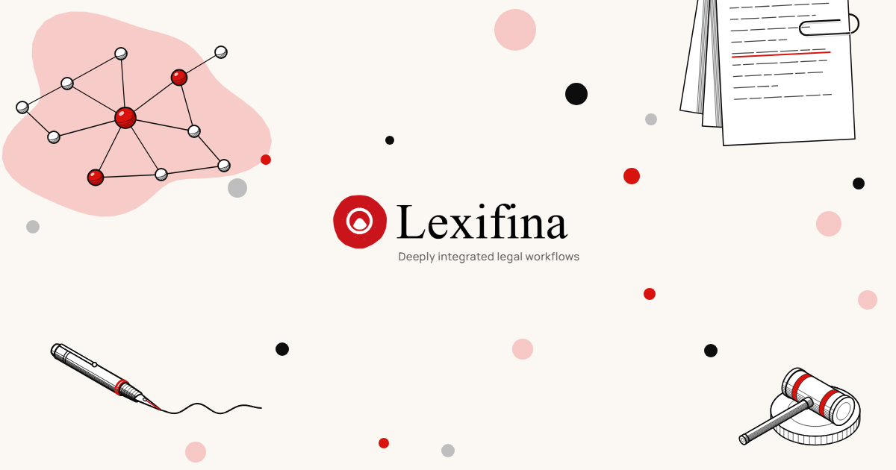
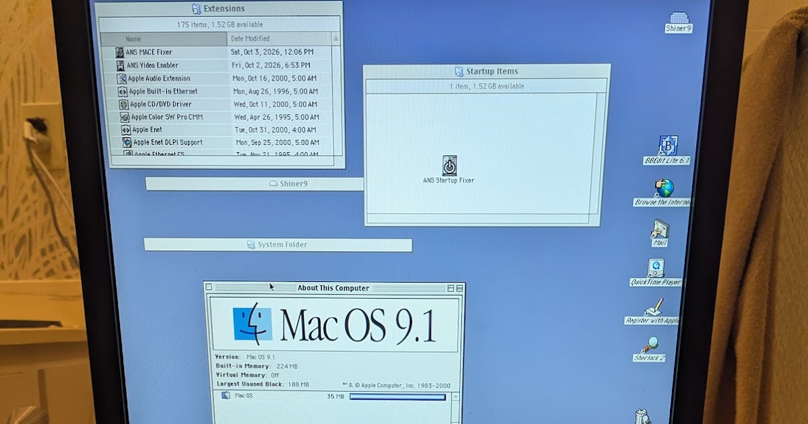
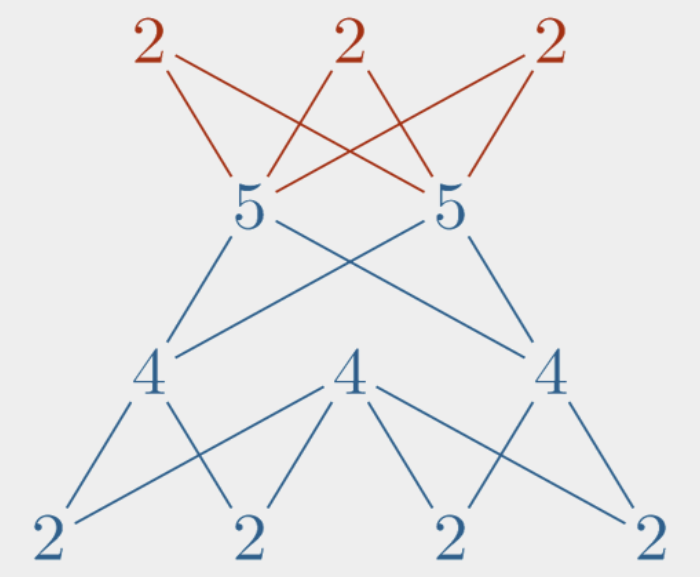

The front page, read closely and set in type — a briefing for Keegan
Compiled from news.ycombinator.comWednesday, October 28, 2026Every fact checked; every joke earned
Tools DeskGhostty 1.4.0 shipsSeven months, 172 contributors, 2,889 commits — and the first complete Kitty graphics implementation outside Kitty itself.
AI DeskGenie 4 announcedDeepMind’s world model now generates ambient sound and dialogue along with the scenery; 542 readers generate opinions faster.
Law & CodeThe U.S. Code, versionedA git-style record for federal statutes: 365 changes replayed, 361 reproduced exactly.
Science DeskInk, frozen mid-airA 25-year-old German photographer takes Nikon’s Small World with an inkjet printhead at 20× magnification.
Lead Story · Artificial Intelligence
Genie 4: The World Simulator Learns to Talk Back
DeepMind’s new model generates sound, speech and physics in real time — the commentariat’s physics remain unchanged
From the AI Desk★ 939 pts · 542 comments
The official share card for Genie 4. deepmind.google
LONDON — Google DeepMind on Tuesday announced Genie 4, a “new generation of world simulation” and the day’s most-discussed story by a wide margin. The model is natively multimodal: ambient sound, music and interactive dialogue are generated simultaneously with the world it renders, and characters “converse and react to your inputs or events in the world, all in real-time.” Genie 4 leans on the Gemini family — Gemini Omni anchors simulations in real-world appearance, while Gemini 3.8 Flash rides along as “a guiding agent in the loop,” breaking goals into steps and checking each frame for progress.[3]
The announcement is a research preview for trusted testers, rolling out to Google AI Ultra subscribers in Project Genie and early-access partners; the company has also been experimenting with pairing Gemini 4 Argon and Genie 4 to simulate Apptronik’s Apollo humanoid playing checkers, breaking the game into real-time steps. Testers in filmmaking, journalism, gaming and engineering are using it as a rapid “draft mode” — filmmakers step into live simulations of a scene and run multiple takes, adjusting camera, lighting and dialogue on the fly. DeepMind concedes the model “remains an early, experimental model.”[3]
The forum was less reverent. One reader judged that Genie 4 “almost looks worse than Genie 3 in terms of player control? It doesn’t even seem to respond to inputs.” Another saw the endgame plainly: “Stadia + World Models = New generation of DRM for games” — the artifact never ships, only the stream. On the demo footage, one verdict stood: “It also still looks like a video game rendering.” And a reader watching the announcement video caught its auto-captions rendering “Genie 4” as “Genie form,” marveling at “the juxtaposition of such advanced generative AI and such terrible speech-to-text coming from the same parent company.”[4]
» Continued in the comments, all 542 of them
Tools Desk
Ghostty 1.4.0: A Terminal That Compresses Its Own Past
Tools Desk★ 1108 pts · 353 cmts
The official share card for Ghostty 1.4.0. ghostty.org
The day’s top story by points: Ghostty 1.4.0, released October 27 after seven months, 172 contributors and 2,889 commits. The marquee: a 100%-complete Kitty graphics implementation — animation and relative placements included — making Ghostty “the first terminal to do this outside of Kitty itself.” Image payloads now parse with SIMD, about 16× faster; scrollback is transparently compressed, cutting memory 70–90% and letting the default history grow from 10 MB to 50 MB.[1]
The best find is archaeological: on macOS, “the kernel caps every read from a pty at about 1 KiB no matter how large the read buffer is,” so Ghostty now drains on one thread and parses on another — throughput up 25–55%, and cat-ing a 150 MB file falls from 1.5 seconds to 566 ms. The release also carries ten security advisories (CVEs “requested weeks ago,” unassigned), supports macOS 27 “Golden Gate,” and raises GTK requirements past what Ubuntu 24.04 LTS provides.[1]
In the thread, creator Mitchell Hashimoto reminded readers what the project is for: “Ghostty GUI is just a glorified tech demo for libghostty.” Elsewhere a terminal veteran paid the genre its due: “Wrote a VT parser once, bracketed paste edge cases ate a whole week. Respect.”[2]
By the Numbers — Ghostty 1.4.0
Months of work
7
Contributors
172
Commits
2,889
Security advisories
10
Kitty graphics spec covered
100%
Scrollback limit (was 10 MB)
50 MB
Plain-ASCII parse speed
128→725 MB/s
Field Desk
Survival LLM: The Bug-Out Bag Now Includes Weights
Field Desk★ 400 pts · 152 cmts
Survival LLM’s share card. brangus.io
Back for a second front-page appearance: Survival LLM, a free, open-source assistant that runs entirely offline — the model and a 9 GB library (19 GB installed) live on your machine, spanning ~930,000 of Wikipedia’s most-read articles, FEMA and CDC guidance, WikiMed, military survival manuals, wikiHow, iFixit and ham-radio Q&A. Every answer cites the exact passage it came from. Version 0.3.4, shipped October 27, adds a reasoning dial — Off, 1,000, 4,000, 16,000 tokens, or no limit — so “a model stuck reasoning in circles still answers.”[5]
The engineering honesty is the draw: on a MacBook Pro it draws about 100 W per answer, so a full battery answers “roughly 100 to 300” questions — a budget worth knowing before the blackout. The commentariat split on the premise, with several readers asking why not simply ship the searchable archive without the model. The project’s own footnote answers: smaller models err more, so “the app always shows the source to check.”[6]
“AI models make mistakes, the small ones more often. Every answer shows the articles it used, so you can check.”— The project’s own warning label[5]
Culture Desk · Law Is Code
Git Blame Comes to the United States Code
Culture Desk★ 318 · 171 cmts

Lexifina’s card for the U.S. Code project. lexifina.com
A programmer can point at any line of code and see who wrote it and when; a lawyer reading a federal statute, Lexifina notes, usually cannot — at least not without “an afternoon in the notes at the foot of the section.” So the firm built a version-controlled U.S. Code: pick a date, get the text in force on it, each phrase colored by the Act that wrote it. The stakes are not academic — the small-business debt limit in 11 USC § 1182(1) was $7.5 million in March 2020, lapsed March 27, 2022, was restored that June reaching back over the gap, expired again in June 2024, and stands today at $3,424,000. Which number governs depends on the filing date.[7]
The verification work is the story: replaying every public law between release points from 2017 onward, 365 changes across nine titles, 361 reproduced the next official release exactly — the other four are flagged rather than guessed. The piece leans on Technical University of Munich research in which a model answered 24% of post-cutoff statutory questions alone but 87% once the right text was retrieved; attempts to have models re-apply amendments looked 93–99% right while getting only half of single amendments exactly right. “The history has to be checkable.” Commenters recalled a French predecessor and worried about stewardship — one warned that a private gatekeeper creates “a profit motive to rewrite history.”[8]
The Cupertino File · Hardware & Security
Ten Days On, Apple’s Git Still Trusts the Compromised Certificates
Hardware Desk★ 199 · 73 cmts
The eMudhra certificate-compromise trackers report that Apple was notified on October 17; as of October 28, the developer tools macOS ships — git, curl and python3 — “still trust the compromised certificates.” Anyone on the network path can intercept those tools’ HTTPS: clones can deliver attacker-chosen code, pushes can be altered, GitHub tokens harvested. Worse, macOS 27.2, released October 26, did not fix the issue and “undid the workaround that users had applied by hand, leaving them vulnerable again” — while “dozens of other projects, many run by volunteers, shipped fixes days ago.” The remedy is blunt: delete the affected roots from /etc/ssl/cert.pem, and re-check after every macOS update.[13]
The thread quibbled with the headline — “Apple still ships compromised CA in /etc/. Git is just a victim like every other app using system CA” — but not with the substance: “They just released MacOS 27.2 a few days ago? How and why did they not do a patch at least then?”[14]
Also in the File: The 1996 Apple Network Server Boots Mac OS Again
Retro Hardware★ 74 · 1 cmt

The Apple Network Server, dorm-fridge class, photographed for the post. oldvcr.blogspot.com
From the same company, thirty years earlier: a v1.0 release of a MacOS Extensions Pack for the Apple Network Server, the 1996 $10,000-plus AIX machine Steve Jobs killed on arrival. Apple’s then-CTO claimed in 1997 that a ROM swap would let it boot Mac OS; the ROMs were “believed to be vapourware” until a former employee surfaced a dump. The author, holding the preproduction ROM 1.1.20.1, has now fixed its MACE Ethernet, on-board video and restart behavior in software — while keeping the machine able to boot AIX, “preserving the entire historical reason for Shiner’s existence.” Its sole commenter: “Love these little dives into history!”[19][20]
Science Desk
Ink Droplets, Frozen Mid-Air, Win Nikon’s Small World
Science Desk★ 289 · 44 cmts
The winning image, as carried with Ars Technica’s report. arstechnica.net
Ole Bielfeldt, a 25-year-old German experimental photographer, has won the 2026 Nikon Small World photomicrography competition with an image of inkjet droplets being deposited onto paper — beating 1,802 entries from 69 countries in the contest’s 52nd year. The droplets moved faster than his shutter, so Bielfeldt deconstructed the printer until the paper moved under a stationary printhead, shot in a dark room, and used the flash itself as the shutter, freezing the drops mid-air. No expensive rig, and pointedly no AI: he learned the craft in lockdown with a microscope found in his parents’ attic, coupled to his father’s camera with a tube and some wood.[11]
A Nikon spokesperson praised “the intersection of microscope imaging, ingenuity, and artistry.” The forum concurred, with one reader admitting “I refused to believe it was real,” and another filing the supporting brief: “Inkjet printers for their faults are some of the most insane technology that I can think of.” A thread veteran noted the win took 20× magnification where Bielfeldt’s earlier candle and match entries needed only 2.5× — “which just goes to show as to how tiny the printer mechanics really are.”[12]
Security Briefing
Tailscale’s SSH Woes Graduate to Four Bulletins
Security Desk★ 315 · 168 cmts
Tailscale’s card for the SSH remediation update. tailscale.com
The Tailscale SSH saga, day two: the company now points to four security bulletins — TS-2026-014 through 017 — plus a findings-and-fixes blog post. Most issues concern privilege escalation: someone already authorized to connect “may be able to perform actions beyond the permissions of their configured local user, including potentially gaining elevated privileges.” A patched client was targeted for “the end of Tuesday 27 October”; interim guidance is to audit SSH access policies and set TS_SSH_DISABLE_FORWARDING=1, which “mitigates several of the more serious findings.” The company is not recommending everyone disable Tailscale SSH.[9]
Readers parsed the hedging like a disclosure in itself: “‘Most’? ‘In some circumstances’? Makes me think that they could also be investigating a full on unauthorized connection issue.” Others voted with their home labs — one moved to plain WireGuard — and one longtime customer filed the feature-count complaint: “I just want a VPN for connectivity, no taildrop, taildrive, SSH, funnel, services, DNS, node sharing…”[10]
Also on the Desk: Ghostty’s Ten
The day’s top story doubles as a security digest: among Ghostty 1.4.0’s ten advisories, a carriage return could sneak a command past paste protection, and malicious Kitty graphics commands could read or delete files outside the allowed directories — “only requiring displaying malicious output.” CVE numbers remain pending with GitHub, weeks after they were requested.[1]
Field Desk · Weekend Projects
Decompiling Fast Food Tycoon 2, One Pizza at a Time
Field Desk★ 93 · 17 cmts
A developer spent days decompiling a favorite oddball 2001 business simulator — Fast Food Tycoon 2, a.k.a. Pizza Connection 2 in Europe — with an agentic loop and Ghidra: 4,046 functions became 9.5 MB of C-like text, loaded into SQLite, with ReadProcessMemory matching on-screen values to memory addresses. The findings are loving: a dirty-region renderer; a 25-entry daylight table rising from 70 to 251; streetlamps that switch on “around 18:25–18:30” in groups of eight; an errand boy who walks 27 px/second to the celebrity’s 13.8; and citizens with standing schedules — goths stay home until 09:00, students draw a 40% pub allocation at midnight, big shots take 70% opera at dusk.[17]
The childhood mystery got solved too: pizza scoring divides the pie into 24 regions, checks symmetry across opposite sides, and runs a plagiarism check on ingredient weights — a copied recipe is marked “not original” and forfeits +30 taste points with yuppies, goths and tourists (big shots: +5). Readers saluted the format: “This is how an AI-assisted article should be… they used AI to help themselves understand, not used AI to do everything.”[18]
Also on the Field Desk: Graph Theory, Free of Charge
Field Desk★ 188 · 26 cmts

The textbook’s link card. vertex.degree
Start Doing Graph Theory, Mikhail Lavrov’s introductory textbook — free online and as a PDF under CC BY-SA 4.0 — reached the front page. Chapters run from “Coloring Switzerland” and the Towers of Hanoi through Euler tours, Cayley’s formula, and Kőnig’s and Hall’s theorems. The thread’s one regret: no solutions for the practice problems — “which makes it hard to use for self-learning.” One job-seeker called it “very timely” for the interview circuit; a working graph veteran conceded he has “never needed a Hamilton path.”[15][16]
Quote of the Day
“Ghostty GUI is just a glorified tech demo for libghostty.”
— Mitchell Hashimoto, in his own release thread[2]
Posted in the comments under a 1,108-point celebration of the GUI in question. The tech demo, it should be noted, ships with a hundred percent of a graphics protocol and ten security advisories.
Classifieds — Rates: 1 Karma per line
LOST: Ten (10) days of certificate trust, last seen in /etc/ssl/cert.pem. If found, keep; macOS updates may remove it again.
FOUND: One (1) preproduction ROM (v1.1.20.1) booting Mac OS on the 1996 Apple Network Server. Believed vapourware since 1997; claim with proof of AIX.
FOR SALE: Pizza recipe, 24 evenly spread regions, passes the plagiarism check. Yuppies +30 taste points; big shots +5; no returns.
WANTED: Solutions to practice problems, “Start Doing Graph Theory,” any condition. Generations of self-learners waiting.
The Box Score — Front Page by the Points
The Day in One Line
A terminal completes a graphics protocol, a world model learns dialogue, git gets a law degree, a printer sits for its portrait — and Apple’s certificates still haven’t gotten the memo.
Front Page Ledger
Stories surveyed
10
Aggregate points
3,923
Aggregate comments
1,547
Most-discussed
Genie 4 (542)
Top story by points
Ghostty 1.4.0 (1,108)
Security stories
3 of 10
Apple stories (red hatch)
2
Pizza scoring regions
24
Corrections & Clarifications
Correction: An earlier item described Genie 4’s demo footage as “photorealistic.” One reader counters that it “still looks like a video game rendering”; the footage has been downgraded to “photographic from certain angles.”[4]
Clarification: The macOS 27.2 release was described in some coverage as an “update.” It did update one thing: it removed the certificate workaround users had applied by hand.[13]
Correction: The Herald’s 2001 review described Fast Food Tycoon 2’s pizza scoring as “charmingly simple.” The game divides each pizza into 24 regions, checks opposite-side symmetry, and runs a plagiarism check on ingredient weights. The Herald regrets underestimating the sauces of 2001.[17]
Correction: This paper’s 1997 coverage, had it existed, would have reported that ROM swaps enabling Mac OS on the Apple Network Server were vapourware. A former Apple employee has since produced a working dump; the 1997 claim stands awkwardly corrected.[19]
From the Publisher’s Desk
An afternoon front page that cannot decide what century it is in: a terminal emulator ships a hundred percent of a graphics protocol while a 1996 server learns to boot an operating system its maker unlearned; statutes get version control while a printer’s droplets get a portrait. The Herald’s rule held all the same — every number above was counted this afternoon, every quote lifted from the record, and every joke left on the cutting-room floor unless a source paid for it. The certificates, at press time, remain compromised. So does the irony.
— The Herald
Wire Services & Citations
Ghostty, “Release notes for 1.4.0,” ghostty.org, Oct. 27, 2026.
Methodology: Compiled from the Hacker News front page at approximately 13:01 UTC on Oct. 28, 2026; the first twelve items of topstories were fetched and the top ten by score retained. Points and comment counts are snapshots of a moving target and will have changed by the time you check. Story texts are summarized from the linked primary sources; reader quotations quote or paraphrase the linked HN threads. Image credits appear beneath each photograph; the Box Score is the Herald’s own. Corrections, like the news above, are non-fiction.